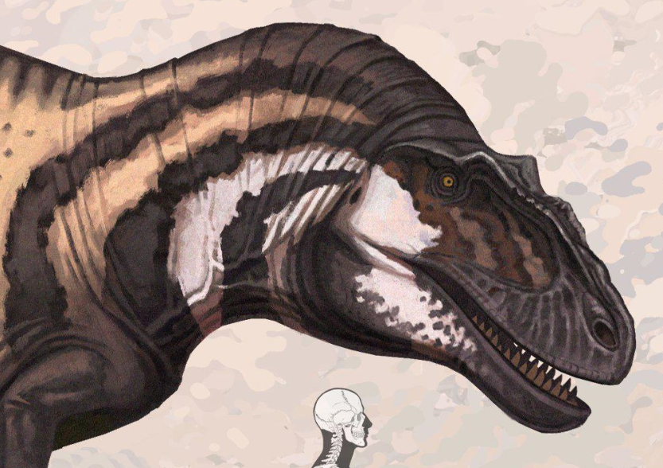

Achrocanthosaurus
Alamosaurus
Altura: 11 Metros;
Comprimento: 30,50 Metros;
Peso: 33 Toneladas;
Dieta: Herbívoro;
Período: Cretáceo (superior) // 70-65 Milhões de Anos;
Habitat: Novo México, EUA;
Albertosaurus
Altura: 3,40 Metros;
Comprimento: 9 Metros;
Peso: 3 Toneladas;
Dieta: Carnívoro;
Período: Cretáceo (superior) // 74-70 Milhões de anos;
Habitat: Alberta, Canadá;
Allosaurus
Altura: 4,50 Metros;
Comprimento: 12 Metros;
Peso: 2.3 Toneladas;
Dieta: Carnívoro;
Período: Jurassico (superior) // 154-144 Milhões de anos;
Habitat: Colorado, EUA;
Amargasaurus
Altura: 2,50 Metros;
Comprimento: 10 Metros;
Peso: 2.6 Toneladas;
Dieta: Herbívoro;
Período: Cretáceo (inferior) // 130-112 Milhões de anos;
Habitat: Patagonia, Argentina;
Ankylosaurus
Altura: 1,90 Metros;
Comprimento: 8 Metros;
Peso: 8 Toneladas;
Dieta: Herbívoro;
Período: Cretáceo (superior) // 70-66 Milhões de anos;
Habitat: Colorado, EUA;
Apatosaurus
Altura: 4,50 Metros;
Comprimento: 22 Metros;
Peso: 22 Toneladas;
Dieta: Herbívoro;
Período: Jurássico (superior) // 157-146 Milhões de anos;
Habitat: Wyoming, EUA;
Archaeopteryx
Altura: 30 centimetros;
Comprimento: 75 centimetros;
Peso: 400 Gramas;
Dieta: Insetívoro / Carnívoro;
Período: Cretáceo (inferior) // 150-125 Milhões de anos.;
Habitat: Solnhofen, Alemanha;
Argentinosaurus
Altura: 22 Metros;
Comprimento: 35 Metros;
Peso: 90 Toneladas.;
Dieta: Herbívoro;
Período: Cretáceo (superior) // 100-93 Milhões de anos;
Habitat: Neuquén, Argentina;
Attenborosaurus
Altura: 1,20 Metros;
Comprimento: 5 Metros;
Peso: 1.1 Toneladas.;
Dieta: Piscívoro;
Período: Jurássico (inferior) // 200-190 Milhões de anos;
Habitat: Inglaterra, RU;
Autralovenator
Altura: 2 Metros;
Comprimento: 6 Metros;
Peso: 1 Tonelada.;
Dieta: Carnívoro;
Período: Cretáceo (superior) // 99-93 Milhões de anos;
Habitat: Queensland, Austrália;
Austroraptor
Altura: 2 Metros;
Comprimento: 6 Metros;
Peso: 400 Quilogramas;
Dieta: Piscívoro / Carnívoro;
Período: Cretáceo (superior) // 83-66 Milhões de anos;
Habitat: Allen, Argentina;
Baryonyx
Altura: 2,40 Metros;
Comprimento: 9 Metros;
Peso: 1.5 Toneladas;
Dieta: Piscívoro / Carnívoro;
Período: Cetáceo (inferior) // 130-125 Milhões de anos;
Habitat: Inglaterra, RU;
Brachiosaurus

Altura: 15,50 Metros;
Comprimento: 20 Metros;
Peso: 44 Toneladas;
Dieta: Herbívoro;
Período: Jurássico (superior) // 161-145 Milhões de anos;
Habitat: Colorado, EUA;
Camarasaurus
Altura: 10 Metros;
Comprimento: 23 Metros;
Peso: 20 Toneladas;
Dieta: Herbívoro;
Período: Jurássico (superior) // 155-145 Milhões de anos;
Habitat: Novo México, EUA;
Carcharodontosaurus
Altura: 4 Metros;
Comprimento: 11 Metros;
Peso: 9 Toneladas;
Dieta: Carnívoro;
Período: Cretáceo (superior) // 100-94 Milhões de anos;
Habitat: Argeria, Africa;
Carnotaurus
Altura: 3 Metros;
Comprimento: 6 Metros;
Peso: 1.7 Toneladas;
Dieta: Carnívoro;
Período: Cretáceo (superior) // 83.5-66 Milhões de anos;
Habitat: La Colonia, Argentina;
Cearadactylus
Altura: 1,80 Metros;
Comprimento: 1,75 Metros;
Invergadura: 5,50 Metrtos;
Peso: 15 Quilogramas;
Dieta: Piscívoro;
Período: Jurássico (superior) // 113-109 Milhões de anos;
Habitat: Ceará, Brasil;
Ceratosaurus
Altura: 2 Metros;
Comprimento: 7 Metros;
Peso: 1 Tonelada;
Dieta: Carnívoro;
Período: Jurássico (inferior) // 161-146 Milhões de anos;
Habitat: Colorado, EUA;
Coelophysis
Altura: 1 Metro;
Comprimento: 2 Metros;
Peso: 20.5 Quilogramas;
Dieta: Carnívoro;
Período: Triássico (superior) // 222-191 Milhões de anos;
Habitat: Novo México, EUA;
Compsognathus
Altura: 90 Centimetros;
Comprimento: 1,40 Metros;
Peso: 3 Quilogramas;
Dieta: Insetívoro / Carnívoro;
Período: Cretáceo (inferior) // 150-143 Milhões de anos;
Habitat: Bavaria, Alemanha;
Concavenator